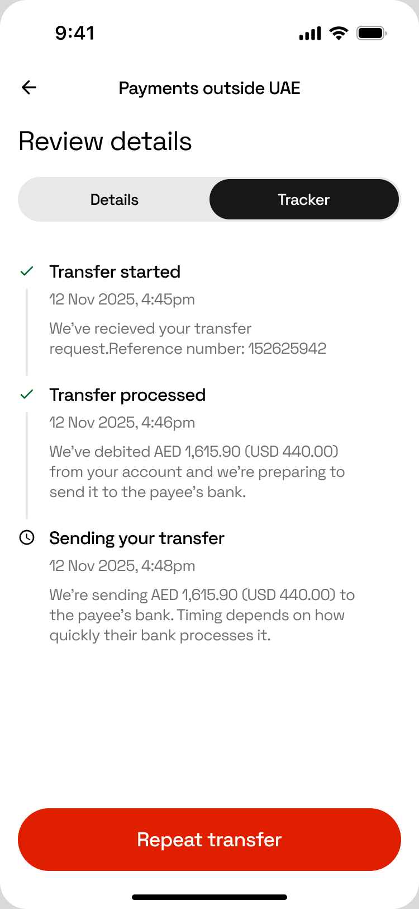
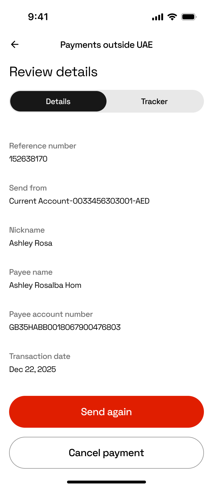
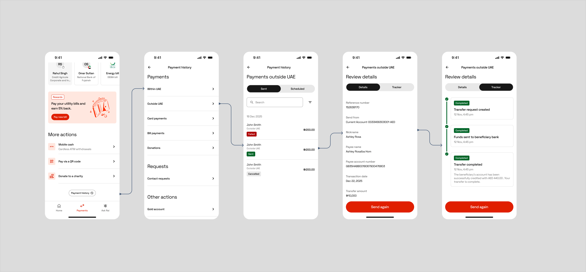
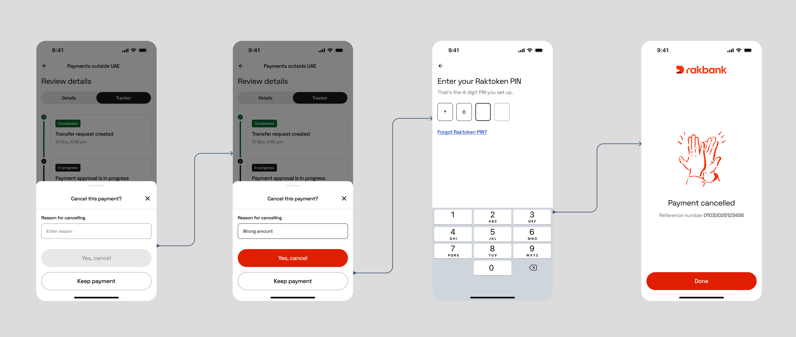

تتبع أموالك
الانتقال الإلزامي في شبكة SWIFT إلى معيار ISO 20022 يحمل بيانات غنية عن حالة كل حوالة، لكن معظم البنوك تتركها خلف الكواليس. حولت هذا الإلزام إلى متتبع مباشر يعرض للعميل مكان أمواله خطوة بخطوة.



الفرصة
كنت ترسل المال إلى خارج الدولة فيختفي. يتنقل ساعات أو أياماً عبر شبكة SWIFT دون أي إشارة لمن أرسله، والتطبيق يرد بكلمة واحدة: قيد الانتظار.
سؤال "أين حوالتي؟" كان سبباً متكرراً للاتصال بخدمة العملاء، ويمكن قياسه: تكلفة تتكرر، وخلف كل اتصال عميل لا يعرف إن كانت أمواله بأمان. المشكلة كبيرة والحل قابل للتمويل، لأن الانتقال إلى ISO 20022 كان يوفر البيانات المطلوبة أصلاً.
الرهان وطريقة قياسه
أن نستثمر تحديثاً يفرضه الامتثال في ميزة تبني الثقة: إجابة واضحة ومحدثة عن سؤال "أين أموالي الآن؟"، وصادقة حتى عند فشل الحوالة، كي لا يضطر العميل إلى الاتصال ليطمئن.
معايير النجاح، حددناها قبل البناء
- تقليل الاتصالات: عدد أقل من اتصالات "أين حوالتي؟" بعد الإطلاق
- استخدام المتتبع: كم مرة يفتح العملاء المتتبع بدلاً من الاتصال
جهزنا قياس المعيارين عند الإطلاق، على أن تصدر أول قراءة بعد الفترة الأولى من الإطلاق.
"كان الانتقال من MT إلى MX إلزاماً تنظيمياً. وكان أيضاً، بهدوء، المادة الخام لميزة ثقة لم يفكر أحد في بنائها."
الفكرة التي غيرت نظرتنا إلى المشروع
كيف أدرت المشروع
تغيران جعلا المشروع قابلاً للتمويل: الانتقال إلى ISO 20022 جعل رسائل الدفع تحمل حالة غنية ومنظمة من البداية إلى النهاية، وتحديث نظام التصميم سمح لنا بإعادة البناء بدلاً من الترقيع. وثقت كل حالة يمكن أن تمر بها الحوالة، ومنها مسارات الفشل والاسترجاع التي تخفيها البنوك عادة، وجعلت هذه الخريطة المرجع الوحيد لفرق المنتج والهندسة وضمان الجودة والامتثال. حددت الخريطة النطاق، وبنينا عليها التقديرات، وصارت الاتفاق الذي يعمل عليه كل فريق، فلم نعد نناقش الحالات من جديد مع كل شاشة.
الرحلة
الحوالة ليست حدثاً واحداً، بل رحلة تمر بحالات كثيرة. ورهان المنتج كان عرضها كلها، ومنها حالات الفشل والاسترجاع التي تخفيها البنوك عادة خلف عبارة "قيد الانتظار". الصدق في الأخبار السيئة هو ما يكسب الثقة، لذلك دخلت حالات الفشل والاسترجاع في النطاق من اليوم الأول، ولكل حالة اسم ووصف بلغة بسيطة وخطوة تالية واضحة.

قراران جعلا الميزة تقلل الاتصالات، لا تعرض الحالة فقط
المقياس لم يكن "هل عرضنا الحالة؟"، بل "هل توقف العملاء عن الاتصال؟". وقراران صنعا معظم الفرق.
- فصلت التفاصيل عن التتبع. الشاشة القديمة كانت تجيب عن سؤالين في مكان واحد: ما هذه العملية؟ وأين هي الآن؟ فصلهما جعل التتبع خطاً زمنياً واضحاً تفهمه بنظرة واحدة، وهو ما يغني فعلاً عن الاتصال، وبقيت في التفاصيل البيانات المرجعية للسجلات والاعتراضات.
- كتبت أسماء الحالات لتجيب العميل، لا لتنسخ لغة الأنظمة. "قيد المعالجة" صارت "نراجع حوالتك"، و"فشلت" صارت "لم نرسل المال"، وهي تجيب عن السؤال الوحيد المهم: هل خرج المال من الحساب؟ وضوح كهذا هو ما يجعل الميزة تقلل الاتصالات بدلاً من أن تزيدها.
معلومة واحدة اختصرت النطاق
في منتصف المشروع، غيرت معلومة واحدة من فريق الهندسة جزءاً كاملاً من الخطة: لا يمكن إلغاء الحوالة إلا قبل خصم المبلغ. استفدت منها لاختصار النطاق كثيراً:
- حذفت فئة كاملة من الحالات: الإلغاء بعد الخصم والاسترداد الجزئي. فقل ما يجب تصميمه وتوثيقه واختباره ودعمه.
- بسطت النصوص: لا حاجة إلى الحديث عن الاسترداد، ويكفي تأكيد واضح أن المبلغ لم يخصم من الحساب.
- اختصرت الرحلة إلى مسار واحد واضح، فقلت مخاطر الإصدار مع موعد نهائي ثابت للترحيل.
حسم قواعد العمل من هذا النوع أقل تكلفة قبل أن تكثر الشاشات. لذلك أغلقت الأسئلة المفتوحة مبكراً، ونظمتها في تعليقات مصنفة تصل إلى صاحب كل قرار، كي لا يبقى شيء غامضاً بالصدفة.

ما أطلقناه
- أطلقنا الميزة ضمن المدفوعات الدولية في Rakbank في موعد الترحيل المحدد
- يرى العملاء الآن حالة حوالات SWIFT مباشرة وخطوة بخطوة، ومنها الفشل والاسترجاع، بدلاً من عبارة "قيد الانتظار" وحدها
- جهزنا قياس تقليل الاتصالات واستخدام المتتبع عند الإطلاق، وأول قراءة تصدر بعد فترة الإطلاق الأولى
الخطوات القادمة
- إشعارات فورية بحالة الحوالة، أجلناها إلى التحديث التالي كي يصدر الإصدار الأول في الموعد الإلزامي
- التحقق من فهم الحالات النادرة: عبارة "الاسترجاع قيد الانتظار" دقيقة لكننا لم نختبرها مع عملاء حقيقيين
- مقارنة استخدام المتتبع بمعدلات الاتصال بخدمة العملاء لقياس أثره في تقليل الاتصالات وبناء الثقة
نظرة إلى الوراء
ما بدأ تحديثاً إلزامياً في الأنظمة الخلفية صار سؤالاً عن المنتج: كيف تجعل العميل مطمئناً على مال لا يراه، وكيف تعرف أنك نجحت؟
الإجابة لم تكن شريط تقدم أجمل. كانت في رؤية الفرصة داخل إلزام تنظيمي، وقول الحقيقة في كل خطوة، خاصة تلك التي لا تسير كما يجب، وفي قياس النتيجة حتى تصبح الثقة شيئاً يمكن قياسه.
تريد مناقشة التفاصيل؟
يسعدني أن أشرح لك القرارات وحالات الحوالة وما لم يصل إلى النسخة النهائية.
تواصل معي